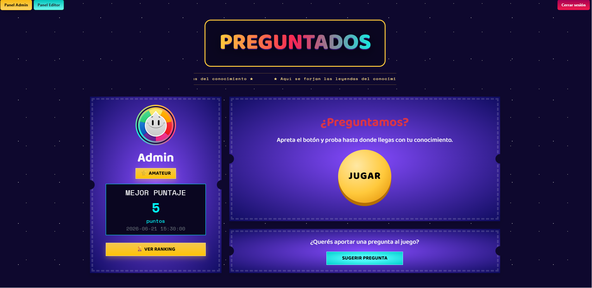
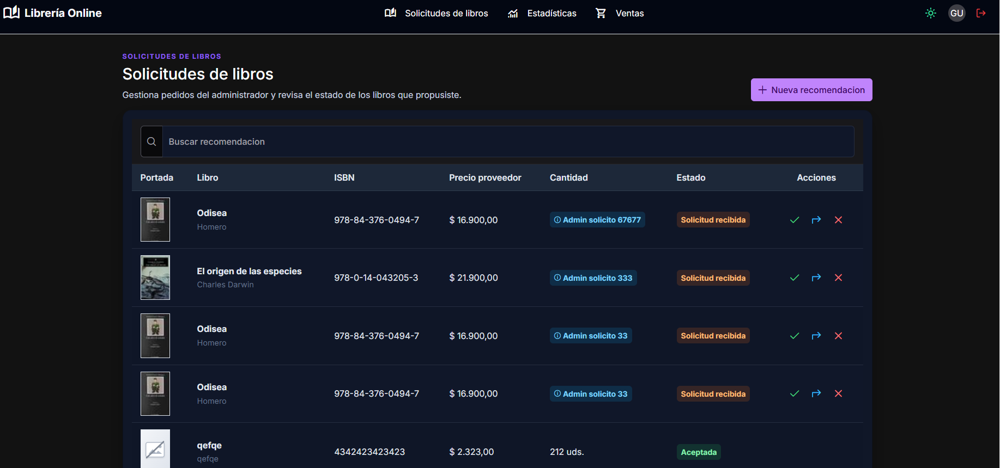
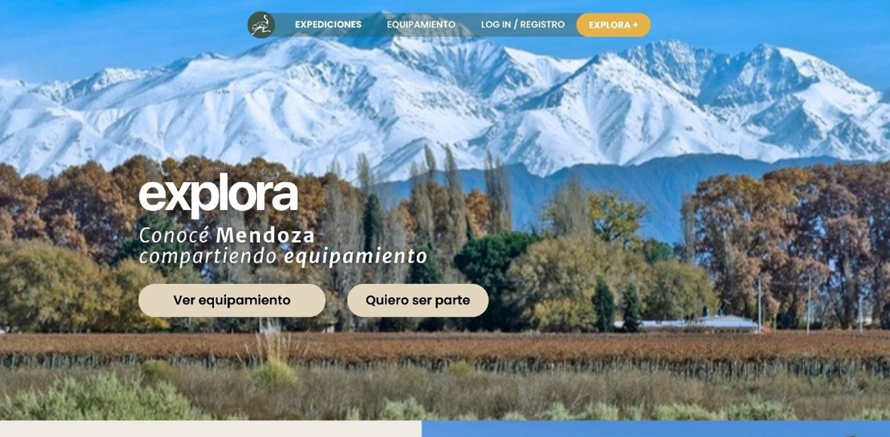
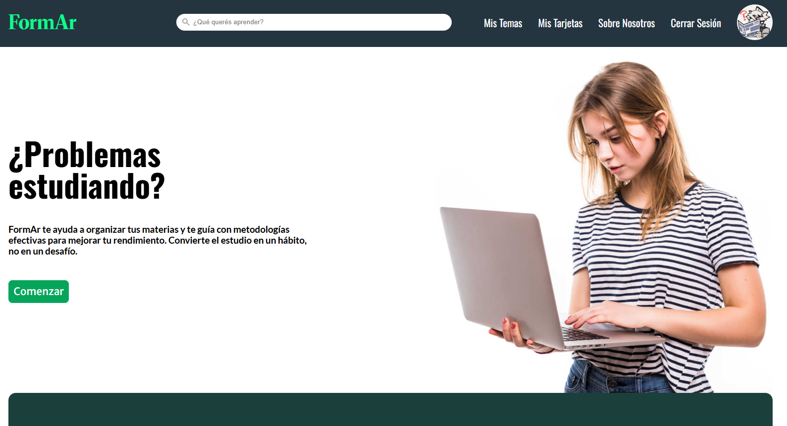
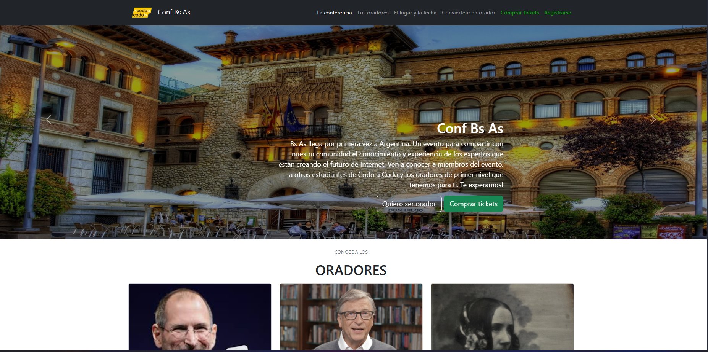
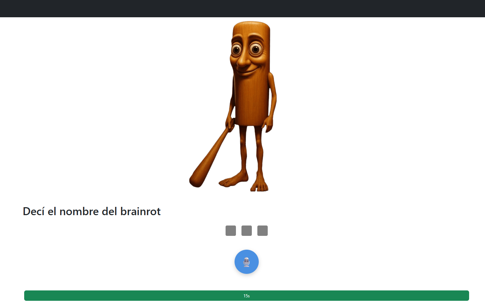

Un proyecto hecho en php, moustache y con DBsql en donde se replica la famosa pagina "Preguntados", en donde la gente responde preguntas de trivia
para ganar Puntos, tiene un ranking, maestria de usuario, logica interna al responder preguntas y paneles de admin
y editor para administrar las preguntas.
Github.
Pagina funcional
para entrar como admin:
usuario:admin
contraseña:1234
(tambien hay un editor pero a diferencia del admin no puede ver las estadisticas)
Github.
Pagina funcional
para entrar como admin:
usuario:admin
contraseña:1234
(tambien hay un editor pero a diferencia del admin no puede ver las estadisticas)
A project made in php, moustache and DBsql where it replicates the webpage "Preguntados", where people answers questions and
get points, with a ranking, user mastery, internal logic upon responding questions and a panel for admin and editor for the
administration of questions.
Github.
functional page
to login as admin:
user:admin
password:1234
(there's also an editor but it cant see the statistics)
Github.
functional page
to login as admin:
user:admin
password:1234
(there's also an editor but it cant see the statistics)

Un projecto hecho en angular y con un DB usando node.js y prisma, se trata de una libreria en donde el usuario
puede comprar libros, tambien hay paneles de admin y proveedores, en donde habra una lista de ofertas y contraofertas
entre los dos, cuando se llege a un acuerdo se registrara el libro si es nuevo y actualizara los stocks
Github
Pagina funcional
para entrar como admin:
email:admin@libreria.com
contraseña: Admin1234
Github
Pagina funcional
para entrar como admin:
email:admin@libreria.com
contraseña: Admin1234
A project made in angular and a DB using node.js and prism, its about a library where the user can buy books, there's also
a panel for admin and providers, with a list of offers and counteroffers, if there's and agreement between the two,
the new book will be registered and update the stocks.
Github.
functional page
to login as admin:
email:admin@libreria.com
password: Admin1234
Github.
functional page
to login as admin:
email:admin@libreria.com
password: Admin1234

Mi trabajo y el de 4 compañeros mas para Diseño grafico en la web, sin codigo porque solo se
enfocaba en lo visual, aca fue cuando me empezo a gustar mas diseñar en el frontend que codear en general,
tambien fue mi primer proyecto grupal, me gusto diseñar en equipo y compartir nuestras ideas mientras
desarrollamos el trabajo.
Se trata de una web para compartir equipamiento de cualquier tipo en Mendoza, tambien podias incribirte
a actividades, si pagabas o no el equipamiento era un acuerdo entre vos y quien te lo prestaba, la pagina
te daba acceso a un chat para su comunicacion.
Antes del diseño se hizo un Brief.
Imagen de la main page
Tambien estan diseñadas las otras paginas pero esta me parece la mas importante
Antes del diseño se hizo un Brief.
Imagen de la main page
{kind=link}
Tambien estan diseñadas las otras paginas pero esta me parece la mas importante
My work with 4 partners for graphic design, codeless because this was visual-focused, this is were i started
to like design in frontend more than coding in general, it was also my first group project, it was fun
to design with a team and share our ideas while developing.
This website is about sharing any kind of equipment in Mendoza, you could also sign on to do
activities, if you pay or not for the equipment is up to the vendor and you, the page would give you a
chat for the Communication.
Before the design a Brief was made
Main page image
The other pages are also designed but this one its the most important for me.
Before the design a Brief was made
Main page image
The other pages are also designed but this one its the most important for me.

Una infografia de la Wii, al principio queria que se tratara de los botones y explicar uno por uno
la decision de porque estaban ahi, al final me decidi por explicar las decisiones de diseño que tomaron
teniendo en cuenta que querian como publico a todos, adultos y niños por igual.
Imagen completa
Imagen completa
An infographic about the Wii, i wanted to talk about each of the buttons and explain why they were there,
but i decided to talk about the design taking into account that they wanted as an audience kids and adults.
Full image
Full image

Otro trabajo en grupo con 3 personas, esta vez es una plataforma de educacion, en donde se enfoca en usar
metodologias de estudio para ayudar al usuario, + un chatbot que te da pistas en vez de ayudarte(esto quedo como
concepto, no fue hecho)
Repositorio del proyecto
Pagina web
Repositorio del proyecto
Pagina web
Another project made with 3 people, this time its a website about education, where we focused on
study methodologies to help the user, + an chatbot that gives you clues instead of giving the answer
(this was a concept, it was not made)
github proyect
Webpage
github proyect
Webpage

Mi primer proyecto! me incribi a CodoACodo para saber si esto de la programacion me iria bien
la unica esperiencia que tuve antes fue hacer un semaforo en arduino en mi secundaria,
creo que avance mucho ahora que veo lo simple que era esto, la mayor parte son esquemas ya hechos
por Bootstrap lol, pero bueno por algun lado se comienza, solo el frontend esta hecho.
Pagina web.
Pagina web.
My first Proyect! i went into a web development course to know if im good at programming,
the only experience i had before was making a traffic light in arduino,
i think i learned a lot since this proyect, well most of these parts were already made by boostrap lol,
oh well you start somewhere, only the frontend is done.
Webpage.
Webpage.

Hecho con 3 personas mas, este fue mi primer estudio profundo en Spring y comprendi porque
hay controladores, servicios y repositorios, mas que nada para ordenar.
Tambien se aplico la construccion de codigo comenzando por los test (TDD: test development driven).. al principio
y tambien use websockets para la parte multijugador.
repositorio del proyecto
Made with 3 more people, this was my first deep study into Spring an i learned why
there are controllers, services and repositories, just to order the code.
and we applied TTD(Test development Driven)... at first,
finally i used websockets for multiplayer
github proyect
{kind=link}
{kind=link}
{kind=link}